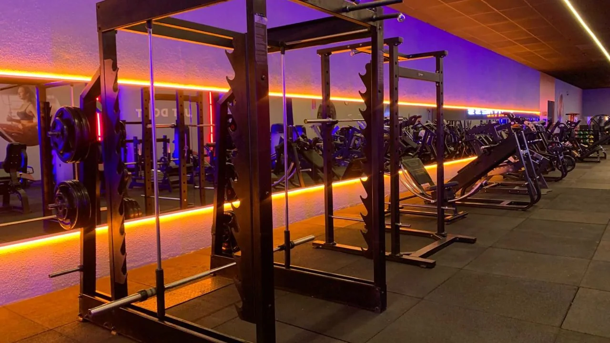
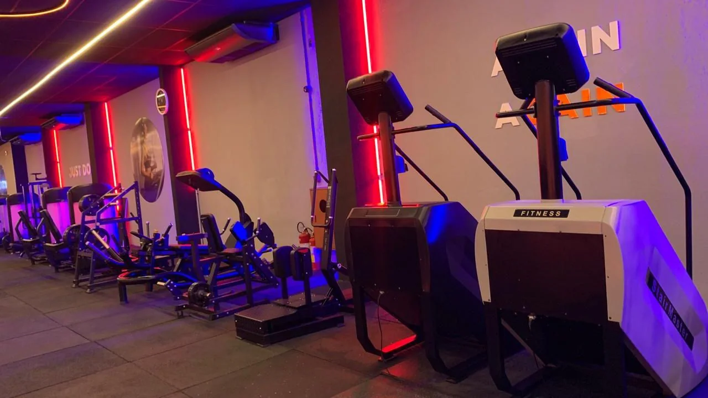
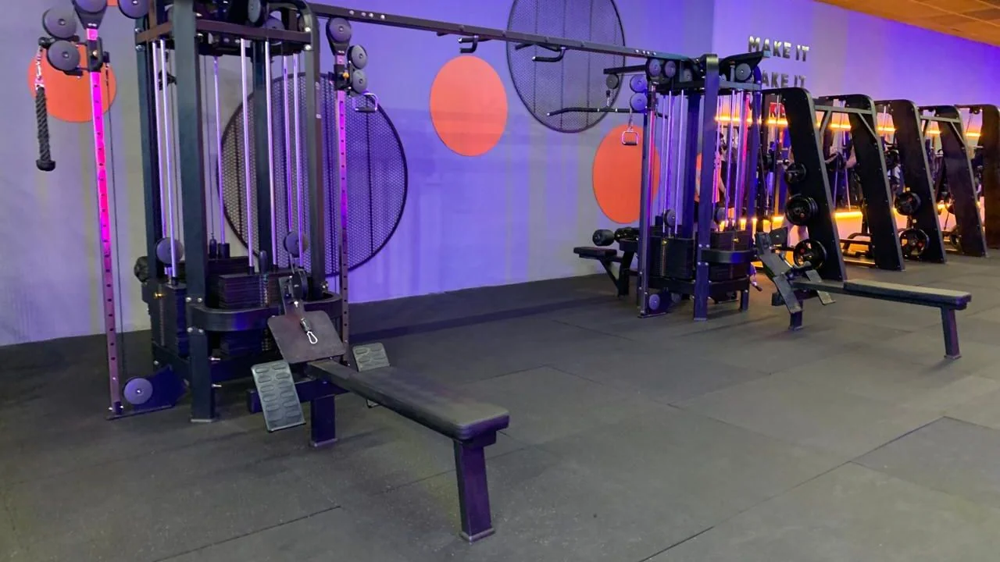
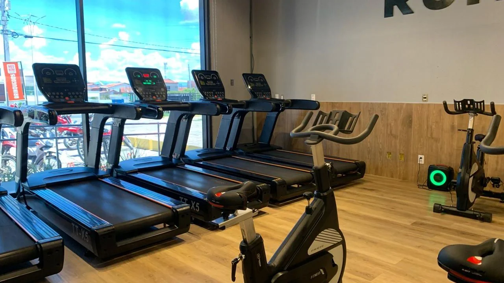
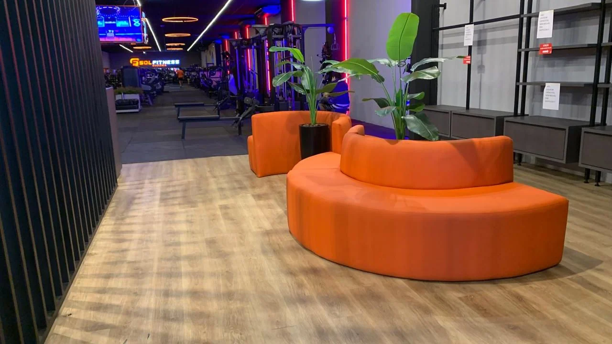
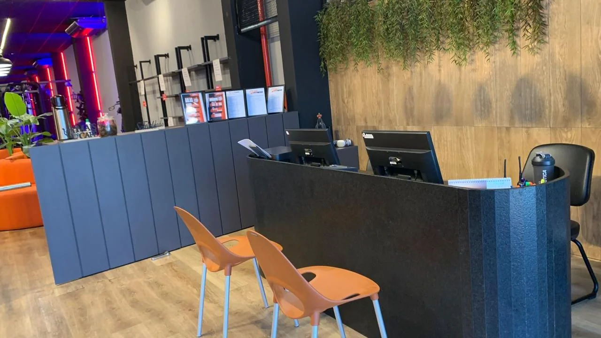

São Sebastião, Patos
Musculação em Patos.
Entre para treinar.

Conheça a nossa área de musculação, os equipamentos e a estrutura da Sol Fitness. Estamos na Rua Dr. Pedro Firmino, em São Sebastião.
Conheça a Sol FitnessMusculação.
Estrutura que você pode conhecer.
Nossa área reúne aparelhos, pesos e diferentes estações de treino. Conheça a Sol Fitness por dentro e converse sobre como começar.



Mais uma parte
do seu treino.
Temos esteiras e bicicletas na nossa área cardiovascular. Conheça os equipamentos durante sua visita à academia.
Para saber mais sobre acesso, planos e a rotina de musculação, fale com a Sol Fitness.
Fale sobre o treinoDo salão
à sua chegada.
Nossa recepção é o primeiro contato com a Sol Fitness. Venha conhecer o salão de musculação e as informações para treinar com a gente.


O que faz parte
da nossa estrutura.
- Ar-condicionado
- Armários
- Bebedouro
- Estacionamento gratuito
- Toalhas
- Secador de cabelo
- Wi-Fi
Confirme com a academia as informações de utilização e disponibilidade na sua visita.
Antes do primeiro treino,
venha conhecer.
Conheça o espaço, tire suas dúvidas sobre a musculação e converse com a Sol Fitness sobre as opções para treinar.
Conversar sobre a visitaFale com a academia
Conte que gostaria de conhecer a estrutura e a musculação.
Conheça as opções
Pergunte sobre planos, valores e informações de acesso.
Combine sua visita
Confirme os horários e os detalhes para conhecer a Sol Fitness.
Antes da
sua visita.
Qual é a principal atividade da academia?
A Sol Fitness oferece musculação. Nossa estrutura também inclui uma área de equipamentos cardiovasculares, com esteiras e bicicletas.
Como conheço os planos e valores?
Fale com a gente pelo WhatsApp para conhecer as opções e as informações de acesso à academia.
A academia tem estacionamento?
Temos estacionamento gratuito. Confirme as orientações de acesso antes da visita.
Onde fica a Sol Fitness?
Estamos na Rua Dr. Pedro Firmino, 323, em São Sebastião, Patos, Paraíba.
Conheça
Sol Fitness.
Rua Dr. Pedro Firmino, 323São Sebastião, Patos, PB
(83) 98662-5760
Confirme os detalhes da visita com a gente antes de vir ao espaço.
Acompanhe no Instagram